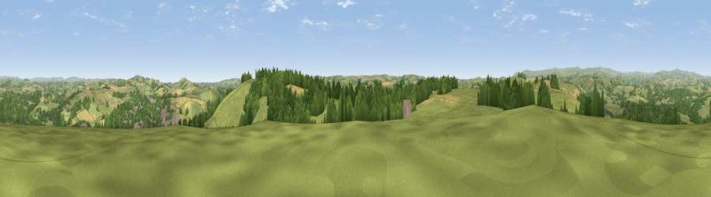

Viewpoint near Totnes
#6655 in England · top 16% of its area beats it · near TotnesThe view, rendered

A 360° render of this exact spot computed from the terrain model, tree cover and land cover — summer colours, afternoon light, calibrated against photographs of famous viewpoints. Real trees, hedges and buildings will differ in detail.
The panorama
Grey silhouette: terrain skyline in each direction (720 bearings, Earth curvature and refraction included). Dashed green: skyline with trees (+15 m) and buildings (+8 m) as obstacles. Blue strip: how far the ground is visible on each bearing.
Where the view opens
Wedge length = distance to the farthest visible ground on that bearing (vegetation-aware). Rings at 10, 25 and 50 km.
What fills the view
57% grassland · 24% woodland · 17% cropland · 2% built-up
Angular shares of the visible panorama (visual magnitude), not map area. Landscape diversity 0.45 (0–1 Shannon).
Key numbers
More beautiful places nearby
The staircase of upgrades: each row has a higher view potential than everything closer. Driving times are estimates from straight-line distance, calibrated against real road routing — check an actual route before setting out.
| Place | Direction | Drive | Score |
|---|---|---|---|
| Viewpoint near Totnes | SE · 1 km | ~3 min | 68.9 |
| Viewpoint near Berry Pomeroy | ENE · 5 km | ~12 min | 76.6 |
| Viewpoint near Stoke Gabriel | E · 6 km | ~12 min | 79.1 |
| Beacon Hill | ENE · 7 km | ~14 min | 82.3 |
| Viewpoint near Kingswear | SE · 14 km | ~26 min | 83.8 |
| Viewpoint near Stokeinteignhead | NE · 16 km | ~29 min | 84.1 |
| Viewpoint near East Prawle | S · 24 km | ~39 min | 84.6 |
| High Peak | NE · 40 km | ~60 min | 85.3 |
50.42545, -3.69670 · source: screening · position refined by local search. Computed location — check access rights before visiting.